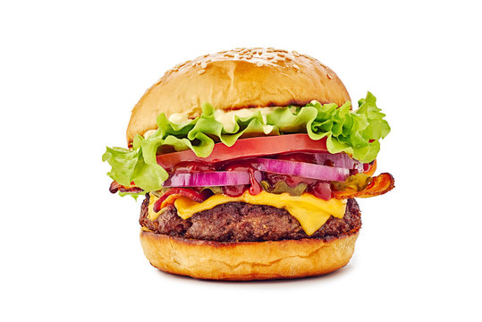

burger

A patty of ground beef that is grilled and served between two halves of a bun.
Ingredients
- Burger buns
- 1 large egg
- 1/2 teaspoon salt
- 1/2 teaspoon ground black pepper
- 1 pound ground beef
- 1/2 cup fine dry bread crumbs
Instructions
- Preheat an outdoor grill for high heat and lightly oil grate.
- Whisk egg, salt, and pepper together in a medium bowl.
- Add ground beef and bread crumbs; mix with your hands or a fork until well blended.
- Form into four 3/4-inch-thick patties.
- Place patties on the preheated grill. Cover and cook 6 to 8 minutes per side, or to desired doneness.
An instant-read thermometer inserted into the center should read at least 160 degrees F (70 degrees C).
- Serve hot between two halves of a bun.